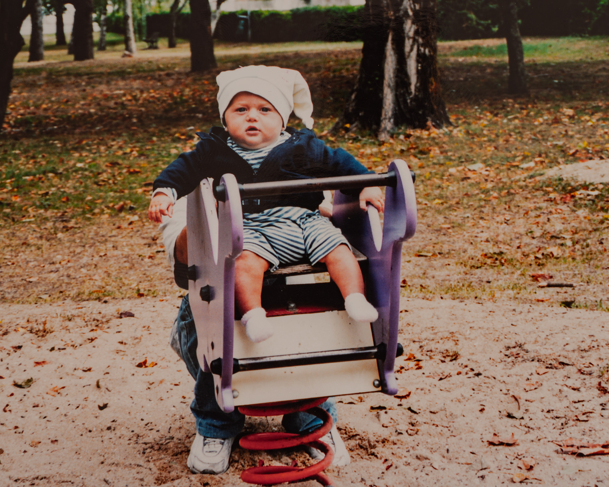
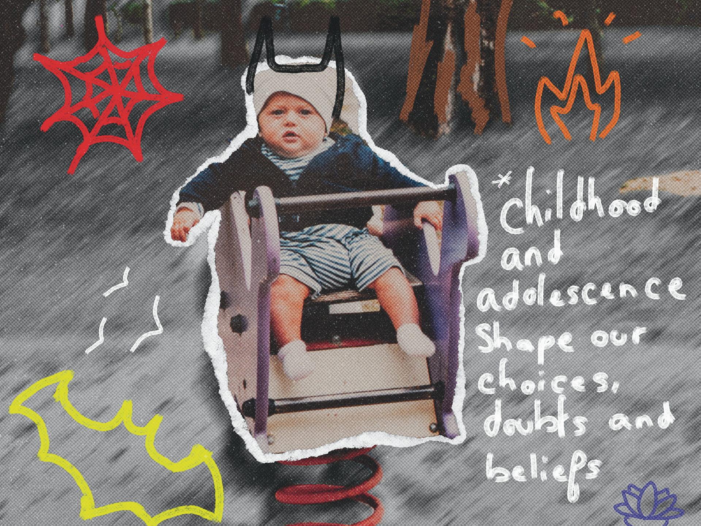

Echo
Collage photographique réalisé lors d'un séminaire photo autour du thème « Écho ». L'enfance comme point de départ, l'image de l'enfant se mêle à des éléments graphiques spontanés, comme des souvenirs qui surgissent et continuent de vibrer en nous.

